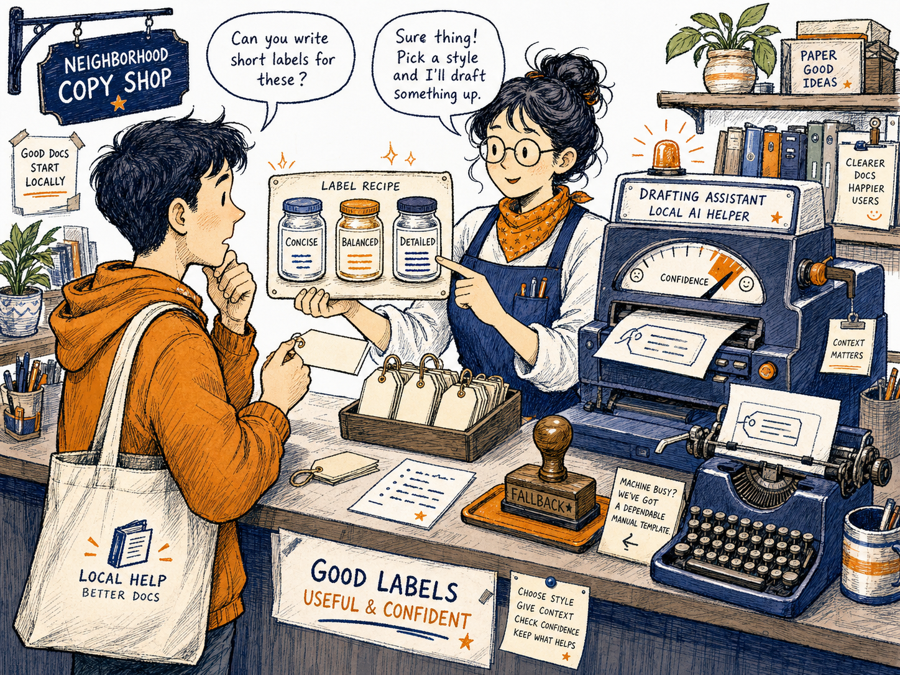
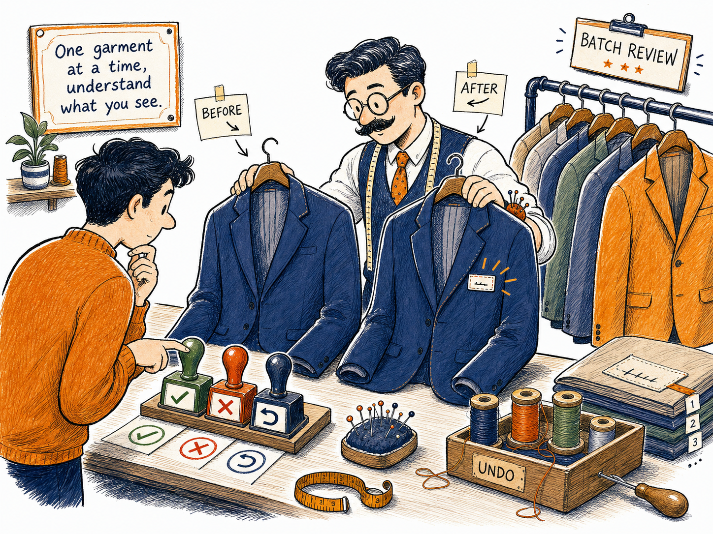
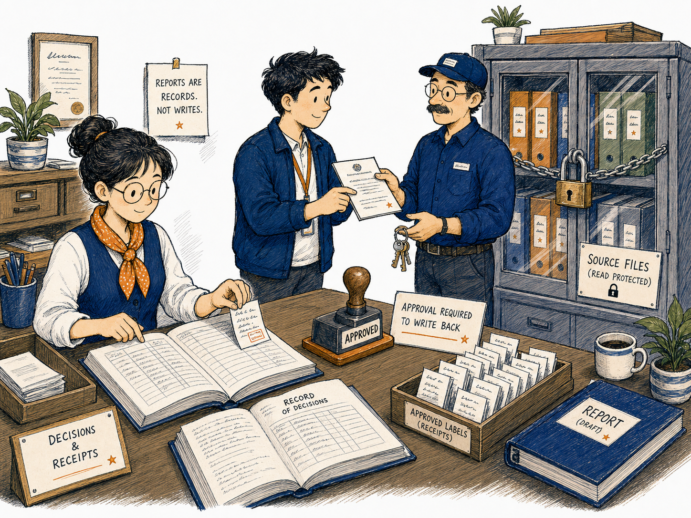

KANDA Reasoner Help
First-Time User TutorialDocstring Assistant
Find missing Python explanations, review safe drafts, preview exact changes, and write only when you deliberately approve the result.
What Is a Docstring?
A docstring is a short explanation stored inside Python code. It tells a person, an editor, or another tool what a module, class, function, or method is supposed to do.
In plain English: A docstring is like the label on a medicine box or the title on a folder. The contents may already be correct, but the label helps you understand what is inside before opening it.
What This Tab Does
Docstring Assistant can perform three separate jobs:
- Scan - find code that is missing docstrings.
- Diff - show the exact text changes that would be made.
- Write - insert validated docstrings into selected source files.
Scanning does not write to your code. Previewing a diff does not write to your code. Writing happens only when you choose Write mode and complete the required confirmation.
Before You Start
- Make sure Project Root points to the project you actually want to inspect.
- Start with a small scope, such as one file or one folder.
- Choose Scan mode.
- Leave the writing confirmation disabled.
- Use the default worker count unless you have a reason to change it.
- Save the report after the scan so you can review the findings.
Project Root means the main folder of the project.
The Safest First-Time Workflow
Step 1 - Choose Scan mode
Select Scan in the Mode field. Scan mode searches and reports. It does not modify Python files.
You should see: messages in the Output area and new rows in the review/report area.
Step 2 - Choose a small scope
Select one file, one module, or one folder rather than the full project. Use Browse to select the target.
Step 3 - Choose what should be checked
Use the checkboxes for modules, classes, functions or methods, and file-address information when available.
Step 4 - Run the scan
Click Run selected mode. The Stop button becomes available while the operation is active.
Step 5 - Review the findings
Select one row at a time and check the file, symbol, original source, draft state, and review status.
Step 6 - Generate one draft
Click Generate Draft for one selected row. Do not start with Generate All Drafts.
Step 7 - Compare before and after
Read Before Correction and After Correction. The suggestion must describe the code accurately and must not invent behavior.
Step 8 - Save your decision
Use Save Review Decision, Approve Row, or Reject Row.
Step 9 - Preview the exact diff
Select Diff mode and run it for the same small scope.
Step 10 - Write only after approval
Use Write only after the scan, draft, target path, and exact diff are correct.
Run Options
Mode
| Mode | What it does | Changes source files? | Recommendation |
|---|---|---|---|
| Scan | Finds missing docstrings and creates review findings. | No | Start here |
| Diff | Shows the exact changes that would be made. | No | Use after reviewing |
| Write | Inserts validated docstrings into source files. | Yes | Use last |
Scope and Target Path
Scope controls how much of the project is included. Use the narrowest scope that can answer your current question. Target Path identifies the selected file or folder inside the project.
In plain English: Do not inspect the whole hospital when you only need to check one room.
Modules, Classes, Functions, and Methods
These checkboxes decide which types of Python objects should be checked. You do not need deep Python knowledge to use them.
Workers
Workers control how many scanning tasks may run at the same time. More workers can make a large scan faster, but they do not make the result more accurate. Use the default value for normal work.
Run and Stop
Run selected mode starts the selected operation. Stop Running Selected Mode requests the active operation to stop safely.
AI Assistance

Enable AI assistance turns AI-based draft generation on or off. When it is off, the tab can use its deterministic heuristic method.
Open Config AI opens the shared provider configuration.
Provider, gateway, and model select the configured service used to draft text.
Refresh models updates the available model list.
Load Environment Key loads a required API key from the current environment.
Free models only filters supported web-provider models.
Concise, Balanced, and Detailed control length, not truthfulness.
The Report Area
Report path shows where the report will be saved or loaded.
Save report saves findings, drafts, and review decisions.
Load report loads a previous report. Use only a report that belongs to the same project and source state.
Copy report copies the report to the clipboard.
A report is workflow evidence. It is not proof that source files were changed.
Review and Correct Missing Docstrings

Navigation and Filter
Previous and Next move through rows. Reset restores the current review view. Filter limits which rows are visible.
Before and After
Before Correction shows the original source context. After Correction shows the suggested result.
Draft Buttons
Generate Draft creates a draft for one row.
Generate Visible Drafts creates drafts for rows currently visible under the active filter.
Generate All Drafts creates drafts for all eligible rows.
Stop AI Drafts requests the active draft job to stop.
Undo Last Bulk Drafts reverts the most recent visible or all-row draft run when undo information is available.
Decision Buttons
Save Review Decision saves the selected row's edited draft and decision.
Approve Row marks the selected suggestion as approved in the report.
Reject Row marks it as rejected.
Undo Row Change reverts the latest review change for the selected row when possible.
Approve Visible Rows approves all currently visible rows.
Scan, Diff, and Write Explained
Scan is observation
Scan mode looks and reports. It should be your default starting point.
Diff is preview
Diff mode shows exactly what would change before source writing.
Write is modification
Write mode changes source files. The tool validates the resulting Python and rejects changes that alter non-docstring code structure.
In plain English: The safety check confirms that the engine did not quietly change the machinery while adding the label. You still need to confirm that the label itself is accurate.
What Success Looks Like
- The correct project path is visible.
- A small file or folder is selected.
- Scan mode completes without an error.
- The review list contains understandable findings.
- One selected draft accurately describes the code.
- The report is saved.
- Diff mode shows only the intended docstring addition.
- Write mode is used only after confirmation.
- The source remains valid Python.
- The docstring appears in the intended location.
Common Mistakes
Starting with the full project
Start with one file or folder so the first review remains understandable.
Starting with Write mode
Scan first and preview the diff.
Selecting the wrong target path
Read the path before every run.
Generating all drafts immediately
Generate one selected-row draft first.
Confusing a saved report with saved source files
Report saving and source writing are separate actions.
Approving fluent but inaccurate text
Compare every important claim with the original code.
Loading an old report after the code changed
Run a fresh scan when the project has changed significantly.
If Something Goes Wrong
The run does not start
Check Project Root, Mode, Scope, Target Path, and whether another run is already active.
No rows are found
The code may already have docstrings, the target may be too narrow, the object checkboxes may be disabled, or the wrong location may be selected.
AI draft generation fails
Check provider configuration, model availability, environment key, local service, or network access. You can disable AI and use the heuristic method.
The draft is poor
Reject it, change style or model, and generate another draft.
Diff shows unrelated code changes
Stop. Do not use Write mode. Save the report and investigate the unexpected changes.
Write mode reports an error
Read the Output panel. A rejected unsafe write is safer than an uncertain write.
First-Time Checklist
Before scanning
- Correct Project Root
- Correct Mode
- Small Scope
- Correct Target Path
- Correct object-type checkboxes
Before generating drafts
- Review list belongs to the current scan
- One row selected
- Provider and model checked
- Generate one draft first
Before approving
- Original source read
- Suggested docstring read
- No invented behavior
- Correct row and file
Before writing
- Scan completed
- Report saved
- Diff reviewed
- Only intended docstring changes shown
- Write confirmation deliberate
- Project backup or version control available
Important Safety Boundary

Docstring Assistant separates finding, drafting, reviewing, reporting, previewing, and writing. This separation protects the project.
Do not remove or bypass confirmation and validation steps merely to make the workflow faster.
Final Rule
Scan first, review one draft, save the report, inspect the diff, and write only when the result is clearly correct.